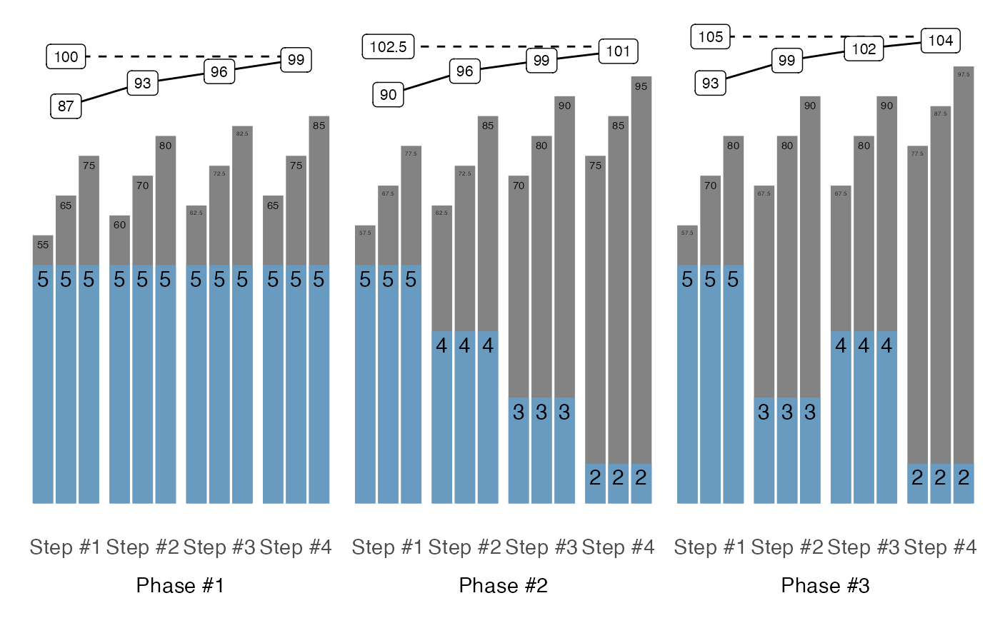

Release combines multiple schemes together with prescription_1RM,
additive_1RM_adjustment, and multiplicative_1RM_adjustment
parameters to calculate working weight, load_1RM, and
buffer
Usage
release(
...,
prescription_1RM = 100,
additive_1RM_adjustment = 2.5,
multiplicative_1RM_adjustment = 1,
rounding = 2.5,
max_perc_1RM_func = max_perc_1RM_epley
)Arguments
- ...
STMr_schemeobjects create byscheme_functions- prescription_1RM
Initial prescription planning 1RM to calculate weight Default is 100
- additive_1RM_adjustment
Additive 1RM adjustment across phases. Default is 2.5
- multiplicative_1RM_adjustment
multiplicative 1RM adjustment across phases. Default is 1 (i.e., no adjustment)
- rounding
Rounding for the calculated weight. Default is 2.5
- max_perc_1RM_func
Max Perc 1RM function to use when calculating
load_1RM. Default ismax_perc_1RM_epley
Examples
scheme1 <- scheme_step(vertical_planning = vertical_constant)
scheme2 <- scheme_step(vertical_planning = vertical_linear)
scheme3 <- scheme_step(vertical_planning = vertical_undulating)
release_df <- release(
scheme1, scheme2, scheme3,
additive_1RM_adjustment = 2.5
)
plot(release_df)
